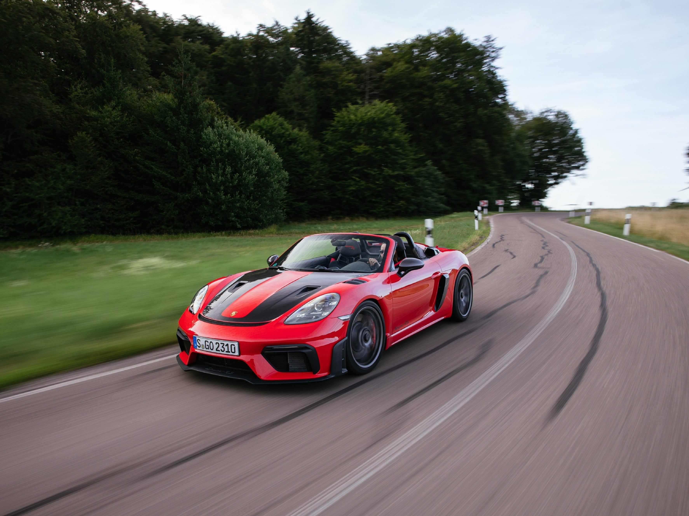

Porsche terá IPVA mais caro de São Paulo (e imposto custará quase R$ 600 mil)
Superesportivo tem apenas duas unidades matriculadas no estado e preço está avaliado em mais de R$ 14 milhões

Porsche 918 Spyder é considerado o modelos de produção mais rápido já feito pela marca (Joy Photography/Porsche Club Brasil/Divulgação)
Há quem já planeje trocar de carro nos próximos meses e tenha incluído esse sonho na lista para 2023.
Mas existe uma questão importante: qual será o valor do IPVA? Se a intenção é comprar um Porsche 918 Spyder,
imposto custará R$ 577.921 em SP — é o valor mais alto no estado, segundo a Secretaria da Fazenda e>
planejamento, já que o esportivo de 2015 é avaliado em R$ 14.448.039.